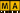

Full Key
The key Full is located in the command area on the left of the key Highlt.
Location key Full
- Pressing Full executes the Full keyword. The dimmer values, for the selected fixtures or channels, will be set to 100 % .
- Pressing Full Full loads the highlight values, for the selected fixtures or channels, into the programmer.
-  + Full executes the FullHighlight keyword. The highlight values, for the selected fixtures or channels, will be loaded into the programmer.